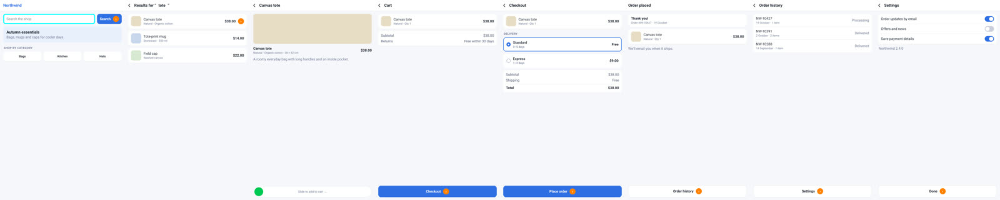
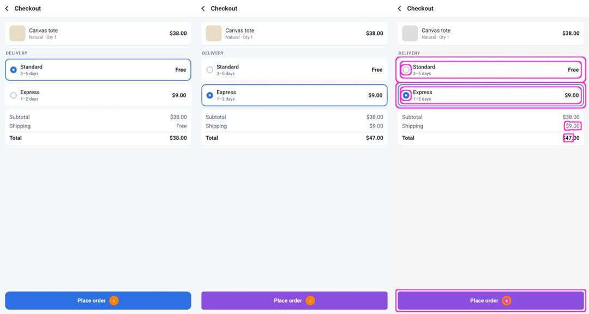
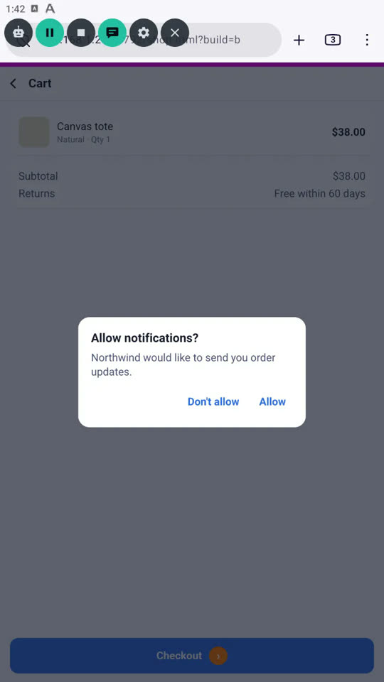
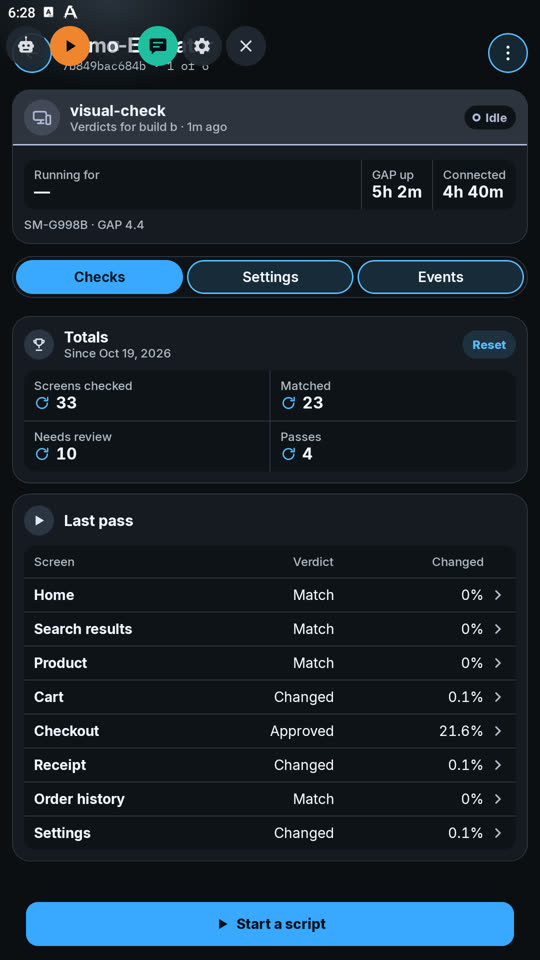
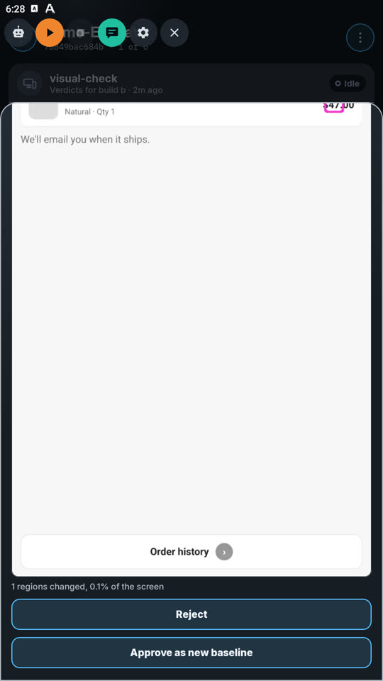
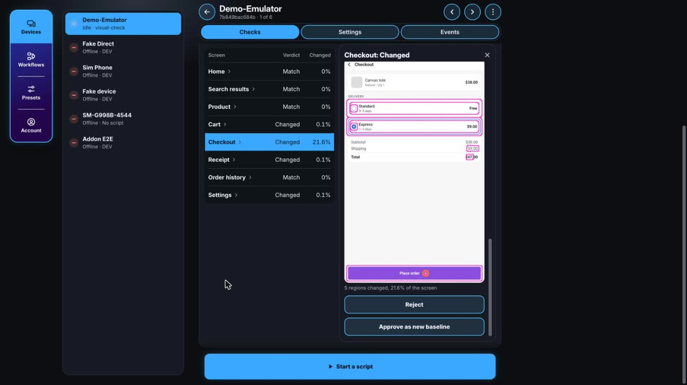

Example · tested on a device
Visual check:
see what changed.
A script that tests a web page with your eyes' job: it walks through every screen of a small shop, compares each one with an approved picture of it, its baseline, and shows exactly what moved. Two builds of the shop let you watch it catch a real change.
1See it run
The first pass, on build A, saves every screen as its baseline. Each one is cropped just below the magenta strip the shop draws at its top, so the browser's own bar is never compared:

The second pass runs build B, which changes Checkout's delivery choice, shipping, total and button colour, and a few words elsewhere. Checkout's baseline, this run's picture, and the difference: grey where nothing changed, in colour with a pink outline where something did.

[visual-check] opened http://<test server>/shop.html?build=a&t=1792417096663 [visual-check] build a, threshold 0.02% [visual-check] Home: New baseline [visual-check] Home did not move on, trying again [visual-check] Search results: New baseline [visual-check] Product: New baseline [visual-check] Cart: New baseline [visual-check] Checkout: New baseline [visual-check] Receipt: New baseline [visual-check] Order history: New baseline [visual-check] Settings: New baseline [visual-check] pass 1: All 8 matched [visual-check] opened http://<test server>/shop.html?build=b&t=1792417150013 [visual-check] build b, threshold 0.02% [visual-check] Home: Match [visual-check] Search results: Match [visual-check] Product: Match [visual-check] Cart did not show: an unfamiliar screen [visual-check] Cart: Changed (0.06%, 1 regions) [visual-check] Checkout: Changed (21.6%, 5 regions) [visual-check] Receipt: Changed (0.09%, 1 regions) [visual-check] Order history: Match [visual-check] Settings: Changed (0.06%, 1 regions) [visual-check] pass 1: 4 screens changed
Tested on GAP 4.4 on an Android 13 emulator (1080 × 1920) with Firefox, the page served from a local machine. Build B also opens an "Allow notifications?" dialog the script has never seen: that is the unfamiliar screen in the log, handled in step 7.
2The folder
visual-check/ ├── index.js the script: the walk and the comparison, then the GAP Companion layer ├── index.html its settings page: build, allowed change, screens, passes, page address ├── web/ │ └── shop.html the shop it walks, builds A and B ├── screenshots/ the run above; not needed on the device └── README.md
3Run it yourself
- Copy the folder to the device, into GAP's scripts folder:
adb shell mkdir -p /sdcard/Download/GeneralAutomationPlatform/scripts adb push visual-check /sdcard/Download/GeneralAutomationPlatform/scripts/
- In GAP, open Library → Local and tap ▶ on
visual-check. - Optional: turn on Allow shell commands for it (its card → Settings), so it opens the shop itself. Without it, open the shop in the device's browser first.
- Pick Build A and press ▶ Play: the first pass takes the baselines.
- Pick Build B and play again. Four screens are flagged, and the dialog on Cart is closed with Back.
The pictures stay on the device, in its own folder (getDevicePath()), so each device keeps baselines of its own. Delete a screen's baseline.png to take a new one.
4How it works
Like the playground, the shop gives every control a colour nothing else uses — a cyan search box, an orange disc on whatever moves on, a green slider knob — so the script finds them by colour at any screen size. Getting through takes a tap, typing and a drag.
| Step | Calls |
|---|---|
| Open the shop | execute('am start -a android.intent.action.VIEW -d "…"'), since no named call opens a URL |
| Find a control | getScreenshot() → inRange() for its colour → findContours() |
| Know where it is | The magenta strip is n/8 of the width on screen n, so its length says which screen shows |
| Move on | tap(); typing() into the search box; tapDown(), moveTo(), tapUp() for the slider |
| Capture | Two equal screenshots in a row, then cropImage() below the strip |
| Compare | absDiff() with the baseline → bgrToGray() → threshold() → dilate() → findContours() for the changed regions |
| Show the difference | Masks from cloneWithMask(), layered with absDiff(), saved with saveImage() |
| Report | console.log(), showBanner(), and emitEvent() per screen and per pass |
5The script
The heart of it, the comparison. The whole script, with its walk and the GAP Companion layer, is index.js.
// Where two pictures differ: a mask of the changed pixels, grown so nearby
// changes join into one region. The caller releases it.
function changedMask(a, b) {
var diff = absDiff(a, b);
var gray = bgrToGray(diff);
releaseImage(diff);
threshold(gray, 32, 255, 0); // a channel moved by more than 32: changed
dilate(gray, 15, 15);
return gray;
}
// {pct, regions} between a picture and the baseline at basePath; null without one.
function compare(current, basePath) {
var base = openImage(basePath);
if (base === 0) return null;
try {
var a = getImageSize(current), b = getImageSize(base);
if (a.width !== b.width || a.height !== b.height) return { pct: 100, regions: 1, mask: 0 };
var mask = changedMask(current, base);
var boxes = findContours(mask, 64, 0);
var area = 0;
boxes.forEach(function (r) { area += r.width * r.height; });
var pct = Math.round(area * 10000 / (a.width * a.height)) / 100;
return { pct: pct, regions: boxes.length, mask: mask };
} finally {
releaseImage(base);
}
}6What testing taught
- A step can go missing. The first search of a run sometimes didn't register (you can see it in the log). When the previous screen is still showing, the script does that step once more, emptying the search box first so the word isn't typed twice.
- Know which screen you're on. Most screens move on with the same orange disc, so seeing it proved nothing. The strip's length says which screen shows; anything else is unfamiliar.
- A fresh page can hold still half drawn. The first screen of a pass gets a moment longer before it's compared.
- Small changes are small. A changed price is a sliver of the screen, so the allowed change defaults to 0.02 %. Unchanged screens measured exactly zero in every run.
7Watch it from your phone
With the script signed and the device linked to GAP Companion, the same run also shows up on your phone and the web dashboard. When it meets the dialog it has never seen, it pauses and asks you: your phone shows the screen, you tap Don't allow, press ▶‖, then Continue, and the walk goes on. Without an answer in 10 minutes it presses Back itself.




That layer is the gap* globals at the bottom of index.js. They do nothing without GAP Companion.